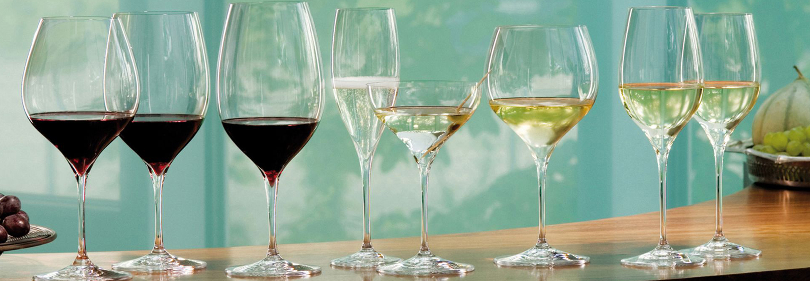

Wine
Bekkekjeller’n collection consist of quality wines. Even though we are specialized in the high-end market, we do have deals with producers who delivers quality wine to lower price – wines who may be stored and are great for restaurants too. These wines will be imported after need and demand. Bekkekjeller’n has great contacts with different vineyard and wine producers, as well as we have an exclusive agreement with a vineyard I France who produce storage wine of high quality. We mainly focus on wine from Piemonte in Italia, Napa Valley in California and Languedoc-Roussillon in France. In addition to importing wine directly from wine auctions around the world. We have, for instance, almost a hundred bottles from the former vinecellar to the restaurant “Bagatelle”, which was managed by the master chef Eyvind Hellstrøm from 1982 to 2009. “Bagatelle” had for period to Michelin-stars.
Accessories
Exclusive and quality wine deserves quality glass. Wine needs to get stored in the best possible way (right temperature, humidty etc), but it is also important to serve the wine in glasses fit for the wine. In order to get the best taste of the wine, the glass needs to have an ideal design. Riedel has in many years designed wineglass who serves the grapes and wines quality right. Therefore, many restaurants all around the world serves wine in Riedel glasses. Riedel has glass for all types of wine. They focus on giving the wine a great aroma and the glasses are therefore designed to serve the wine right. Bekkekjeller’n has a large variety of Riedel products, please contact us for more information.